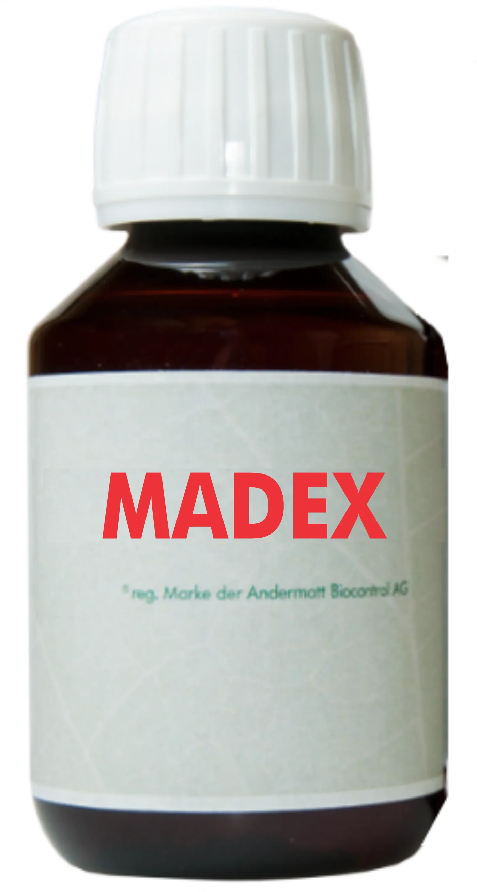
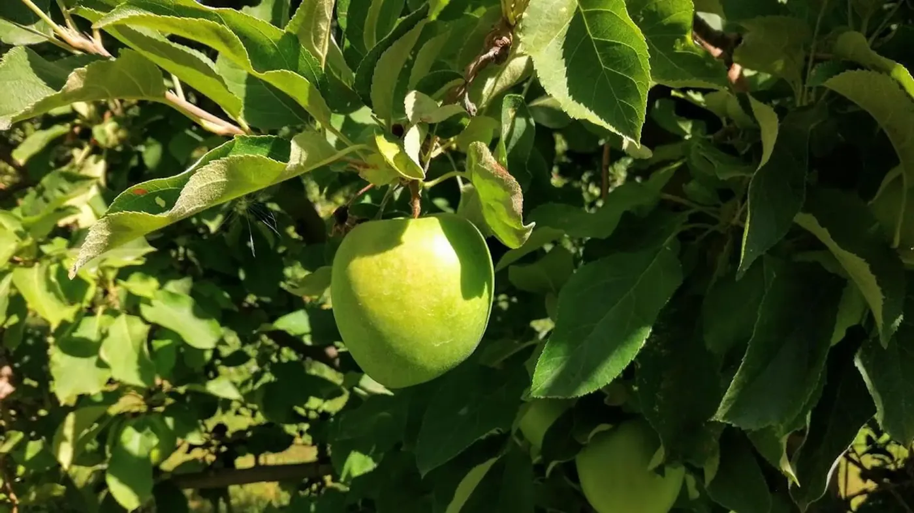

Máxima Especificidad
Ataca exclusivamente a Cydia pomonella . No afecta insectos benéficos, polinizadores, ácaros depredadores ni otros organismos.
INSECTICIDA VIRAL ESPECÍFICO
Madex es un bioinsecticida a base de granulovirus altamente específico para el control eficaz de Cydia pomonella , protegiendo tus cultivos de pomáceas y nogales de forma natural y sostenible.

MECANISMO VIRAL ÚNICO
Formulado por Andermatt, líder mundial en producción de bioinsecticidas a base de virus.
Madex es un insecticida biológico cuyo ingrediente activo es un granulovirus (CpGV) altamente específico para Cydia pomonella . Las larvas ingieren el virus al alimentarse del cultivo tratado. Una vez dentro, el virus se replica, causando la muerte del insecto.
A diferencia de los insecticidas químicos, Madex actúa con precisión quirúrgica, sin afectar a la fauna benéfica ni al medio ambiente, siendo una herramienta clave para el Manejo Integrado de Plagas (MIP).

Descubre el poder de un biocontrol diseñado para la sostenibilidad y la máxima eficacia contra Cydia pomonella .
Ataca exclusivamente a Cydia pomonella . No afecta insectos benéficos, polinizadores, ácaros depredadores ni otros organismos.
Su modo de acción único (Grupo 31 IRAC) es ideal para rotar o co-aplicar con otros productos, previniendo la resistencia.
Fue el primer insecticida a base de virus registrado en el mundo, desarrollado por Martin Andermatt. Un hito que marcó décadas de eficacia comprobada.
Permite cosechar sin espera. No deja residuos (LMR=0), siendo una herramienta ideal para mercados de exportación exigentes.
La formulación se adhiere a la hoja, asegurando eficacia comprobada incluso después de lluvias acumuladas de hasta 80mm.
Certificado para su uso en agricultura orgánica, cumpliendo con las normativas más estrictas a nivel global.
Conozca los detalles de la formulación avanzada de Madex.
Respaldo
Nuestro equipo técnico-comercial te asesora sin cargo para integrarlo a tu programa de manejo.
También te puede interesar
Feromona líquida microencapsulada para confusión sexual y control de carpocapsa en frutales.
Ver ficha técnica →Sistema aerosol de feromona para confusión sexual y control de carpocapsa en frutales.
Ver ficha técnica →Control combinado y biológico de Carpocapsa y Grafolita con una sola aplicación.
Ver ficha técnica →